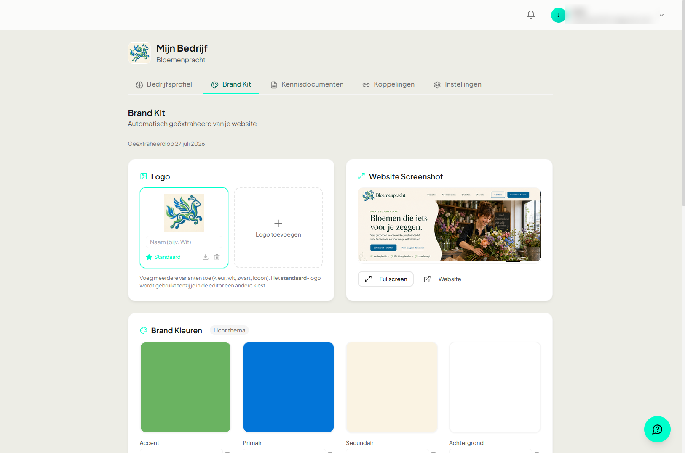
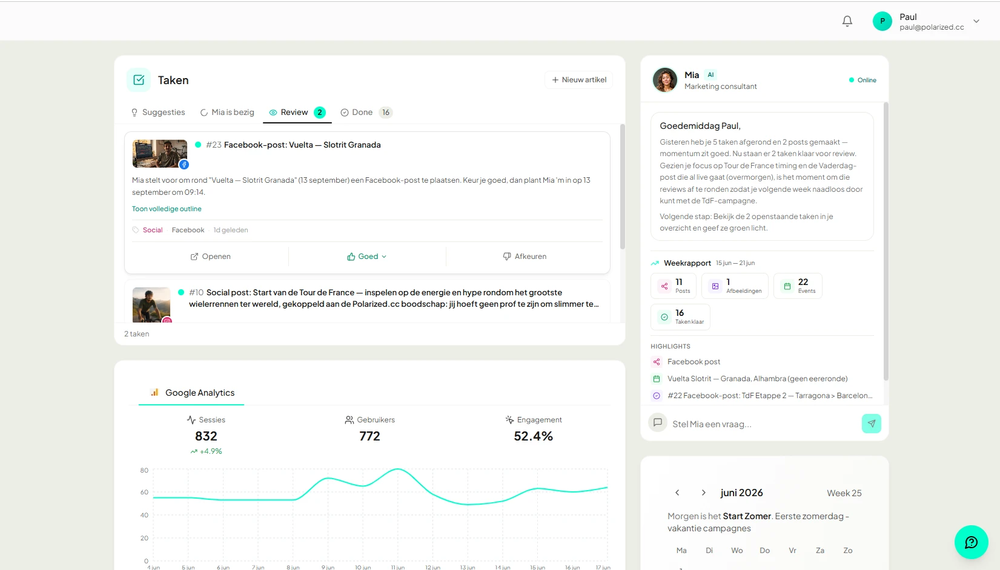
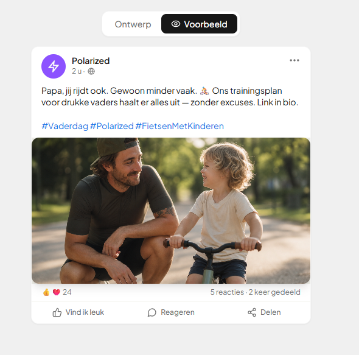
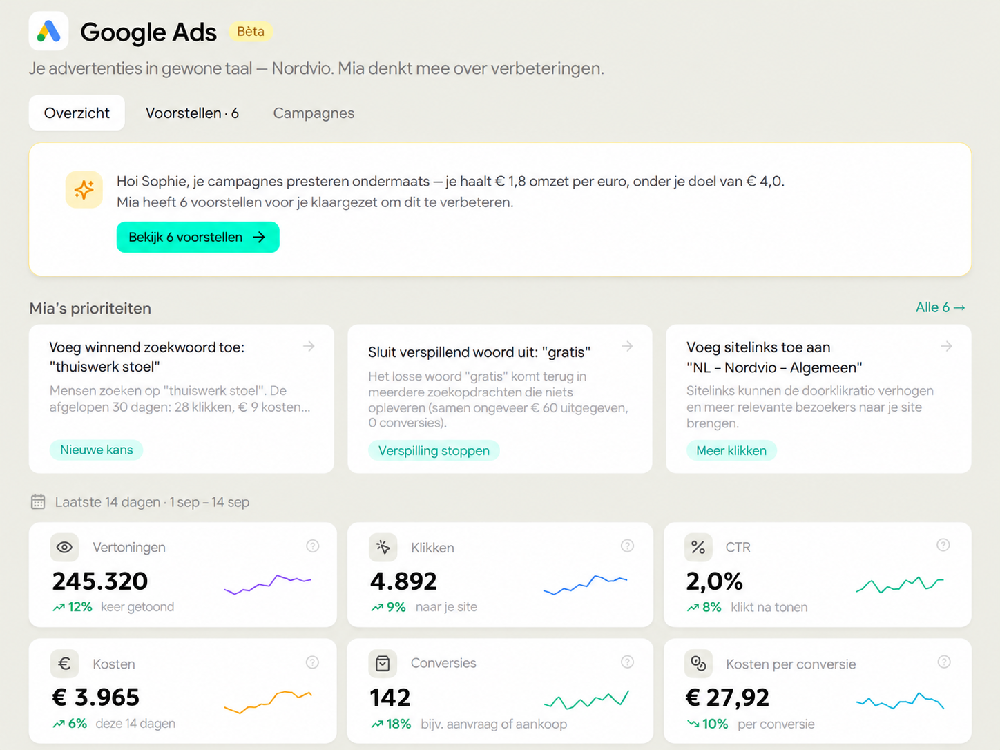

Eén platform voor je hele marketing.
Geen losse tools die elkaar niet kennen. Je begint met je bedrijfsprofiel, dat stel je één keer in. Daarna draaien vier modules op datzelfde profiel, en Mia loopt er als rode draad doorheen. Achter elke module zit de kennis van marketingbureau YourFellow. Mia werkt met de AI van ChatGPT, Claude en Gemini.
Eerst je bedrijfsprofiel. Nu beschikbaar
Dit stel je één keer in. Daarna weet elke module al wie je bent.
Je plakt je website en Mia leest hem uit: wat je verkoopt, voor wie, en in welke toon. Heb je een brand guide of andere documenten, dan voeg je die toe als kennisdocument, zodat Mia die ook meeleest. Zo hoef je het nergens opnieuw uit te leggen. Het kost ongeveer 10 minuten.
- Leest je website automatisch uit
- Herkent je huisstijl, toon en doelgroep
- Brand guide en eigen documenten toevoegen
- Geeft elke module dezelfde basis

Klik om te vergroten. In dit voorbeeld bloemenzaak Bloemenpracht, een verzonnen bedrijf met zelf bedachte teksten en beelden. In jouw HQ staat je eigen bedrijf.
En dit doen de vier modules.
Allemaal gevoed door je bedrijfsprofiel. We beginnen bij het dashboard, je startscherm, en lopen daarna de vier werk-modules langs.
1 Dashboard
Je startscherm met al je cijfers op één plek.
Geen vijf tabbladen meer. Je website, je socials en je webshop staan bij elkaar, plus wat er op dit moment loopt. Mia houdt het scherm voor je bij en zet bovenaan waar je vandaag op moet letten.
- Je belangrijkste cijfers bovenaan
- Bezoekers op je site, zonder Analytics te openen
- De status van elke taak: bezig, wacht op jou of klaar

2 Organic:
social posts en SEO Nu beschikbaar
Gevonden worden, zonder advertenties.
Organic betekent gevonden worden zonder te betalen voor advertenties: via social media en via Google. Mia zet je social posts klaar in jouw merkstijl en plant ze in na jouw akkoord. En ze laat zien hoe je gevonden wordt in Google, waar je klikken laat liggen en of ChatGPT je noemt.
- Social posts op basis van je kalender, voor al je socials
- Je SEO-score, met per onderdeel wat je nu doet
- Mia schrijft pagina's die je hoger brengen
- Zie of ChatGPT je bedrijf noemt
Social posts
Facebook-post: handgebonden seizoensboeket. Past bij de veilingweek. Invalshoek: elk boeket is uniek.

Tekst en beeld in jouw stijl, met hashtags.
86Social posts
Mia zet posts klaar in jouw merkstijl en plant ze in na jouw akkoord.
Meer over social posts →SEO
Op "bruidsboeket utrecht" word je 1.420 keer gezien, maar je staat op plek 11. Bijna niemand klikt.
Bruidsboeket in Utrecht: zo kies je het mooiste
Met een kort antwoord bovenaan, voor Google en ChatGPT.
3 Google Ads-beheer Nu beschikbaar
Je advertenties op Google, voorgesteld en bijgestuurd.
Je koppelt je Google-account, net zoals je Analytics en Search Console koppelt. Adverteer je al, dan kijkt Mia mee en stelt ze verbeteringen voor: zoekwoorden toevoegen of juist uitsluiten, en verspilling stoppen. Nog geen campagnes? Dan bouwt Mia ze voor je. Jij keurt goed, en pas dan verandert er iets in je Google Ads-account.
- Werkend Google Ads-account nodig
- Zoekwoorden toevoegen of uitsluiten, verspilling stoppen
- Niets verandert zonder jouw goedkeuring

Klik om te vergroten. In dit voorbeeld Nordvio, een verzonnen bedrijf met zelf bedachte cijfers.
4 Meta ads-beheer Binnenkort
Hetzelfde voor Facebook en Instagram.
Mia volgt je Meta-campagnes op dezelfde manier: welke advertentie nog werkt, welke uitgekeken raakt en waar je budget beter naartoe kan. Jij beslist wat er verandert.
- Facebook en Instagram in één overzicht
- Mia ziet wanneer een advertentie is uitgekeken
- Jij houdt de knoppen in handen
De beste AI, zonder dat jij hoeft te kiezen.
Achter Mia werken de drie bekendste AI-modellen van dit moment. Mia gebruikt ze voor elk onderdeel van HQ, van je posts tot je Google Ads.
- Per taak het beste model. Een post schrijven, je cijfers lezen of een advertentie verbeteren: Mia kiest zelf welke AI dat het best doet.
- Geen losse abonnementen of prompts. Je hoeft geen account bij ChatGPT, Claude of Gemini te nemen en niets te typen. Het zit standaard in YourFellow HQ.
- Slimmer dan losse AI. Een gewone chatbot kent je bedrijf niet. Mia combineert de AI met je bedrijfsprofiel en de aanpak van marketingbureau YourFellow.
Werk je voor meerdere klanten? Binnenkort
Straks beheer je meerdere klantprofielen onder één account.
Voor marketingbureaus, freelance marketeers en ondernemers met meerdere merken. Elk profiel heeft zijn eigen bedrijfsprofiel, en Mia werkt per klant in de juiste stijl. Je wisselt met één klik, zonder opnieuw in te loggen.
- Eigen huisstijl en tone of voice per klant
- Eigen kanalen gekoppeld en een eigen contentkalender
- Eigen rapportages per klant
- Bepaal per klant welke teamleden toegang hebben
- BKBakkerij KosterInstagram, Facebook, Google Ads3 posts klaar
- FSFitStudio NoordInstagram, Google AdsRapportage klaar
- HVHoveniers VosFacebook, website2 posts klaar
Eén profiel.
Vier modules. Eén Mia.
De eerste 14 dagen gratis, zonder betaalgegevens. Instellen kost de eerste keer ongeveer 10 minuten. Daarna draait het.